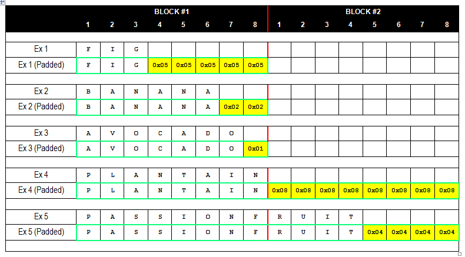

Padding Oracle Attack
Table of Contents
1 개요
- 블록 암호의 취약점을 이용한 공격이다.
- 키 없이 암호문을 해독할 수 있다.
- 2002년에 처음 등장했으니 꽤 오래되었다고 할 수 있다(참고로 SQL 인젝션은 1998년).
- "오라클"은 암호학에서 "응답에 대한 판독" 이라는 의미로 쓰인다.
- 즉 패딩 오라클 공격이라는 것은 응답에 대한 판독을 이용한 공격이라는 뜻이 된다.
2 원리
2.1 요약 설명
- 암호화 블록의 패딩의 값을 임의로 바꿨을 때 서버의 응답에 따라 패딩이 맞는 값인지 추측할 수 있다.
- 맞는 패딩을 발견하면 특정 연산을 통해서 원문 블록의 값을 알아낼 수 있다.
- 반복을 통해서 전체 암호문을 해독할 수 있다.
2.2 패딩이란?
- 다음 예제를 보자. 8바이트 블록 암호화에 대한 그림이다.
- ex1을 보면 평문 FIG가 3바이트인데 나머지 5바이트를 패딩(0x05)로 채우고 있는 것이 보인다.
- ex2에서는 두 개의 패딩이 들어간다.
- ex4는 8바이트인데도 8바이트만큼 패딩이 들어간다.

2.3 패딩의 특징
- 패딩의 개수는 패딩의 값과 동일해야 한다.
- 예를 들어 어떤 암호화 블록에 패딩이 두 개 들어간다면 그 패딩 바이트의 값은 0x02 여야 한다.
- 이 것이 패딩 검증(Padding validation)
2.4 CBC모드란?
3 공격 실습
3.1 취약점이 있는 이미지를 다운로드 받아서 설치
3.2 환경 구성
3.3 자동화 툴 사용
- Padbuster 사용 : https://github.com/GDSSecurity/PadBuster
3.4 궁금점
- 왜 자꾸 발생하는가? 위키 피디아의 설명에 보면 2014년의 POODLE도 다운 그레이드 공격과 Oracle Padding 을 합친 공격이었다.2016년에도 CVE-2016-2107 (Luncky thirteen in OpenSSL) 이 발표되엇다.
- CBC 모드에서만 발생하는가? 다른 모드를 사용하면 안전한가?
4 방어
강력한 암호 알고리즘을 쓰면 방어가 될까? No
- 서버 응답에 복호화 에러가 발생했을 때 다른 종류의 응답을 보내지 않는다. 그냥 일반적인 에러 메세지를 보내라.
- 인증수단을 추가하라(HMAC 등).
5 어떻게 진단할 것인가?
6 참고자료
- wikipedia: https://en.wikipedia.org/wiki/Padding_oracle_attack
- hacker 101 : https://www.hacker101.com/vulnerabilities/padding_oracle
- oracle padding attack[이론편] : http://sang-gamja.tistory.com/76?category=734915
- PADDING ORACLE ATTACK (by laughfool) : http://laughfool.tistory.com/31
- 패딩 오라클 이미지 다운 : https://www.vulnhub.com/entry/pentester-lab-padding-oracle,174/
- oracle padding attack[실전편] : http://sang-gamja.tistory.com/105?category=734915
- Padbuster 소스코드 : https://github.com/GDSSecurity/PadBuster